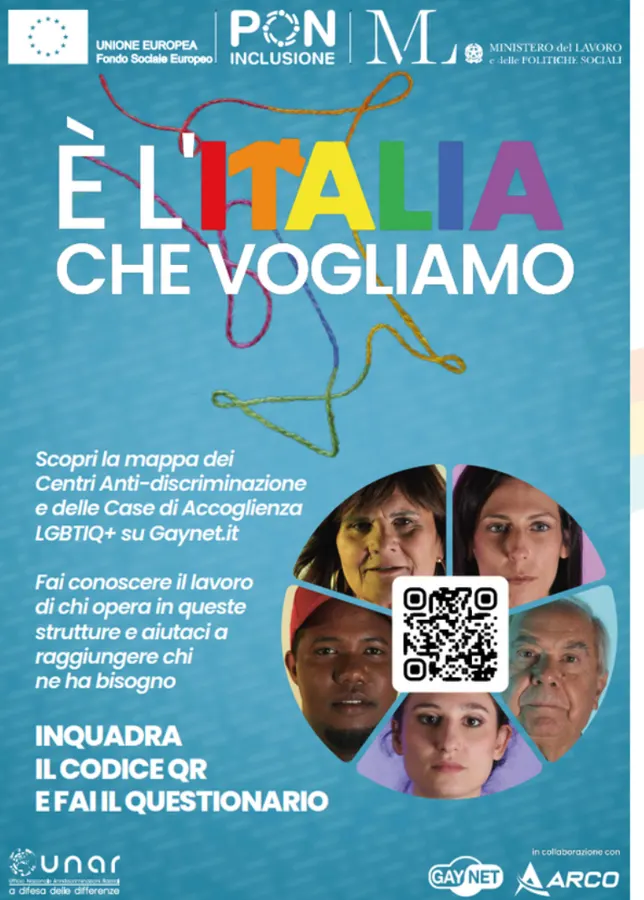
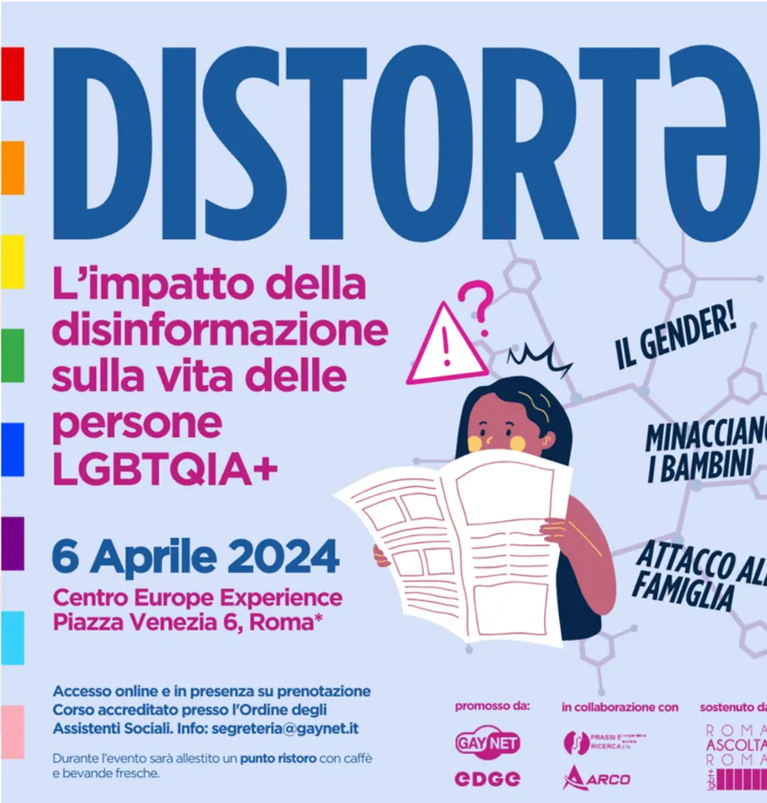
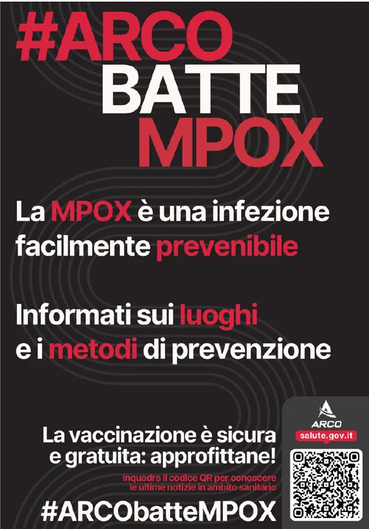
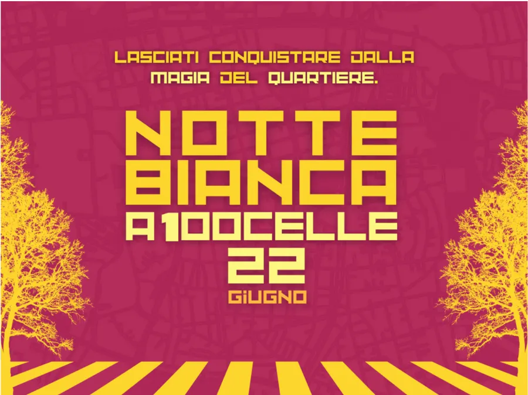
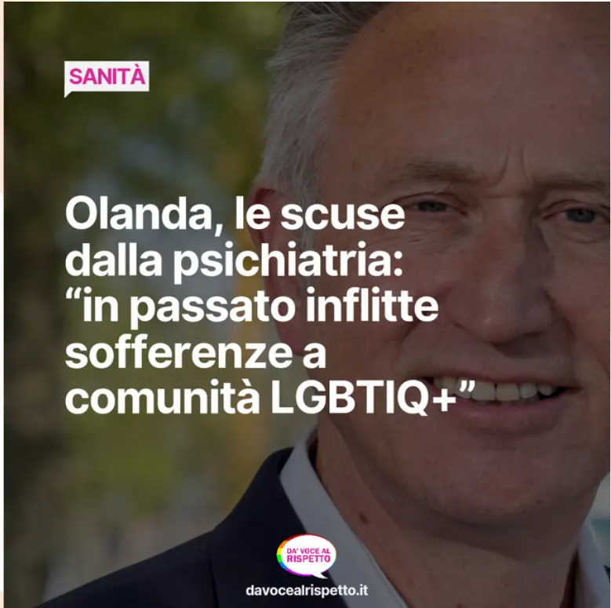
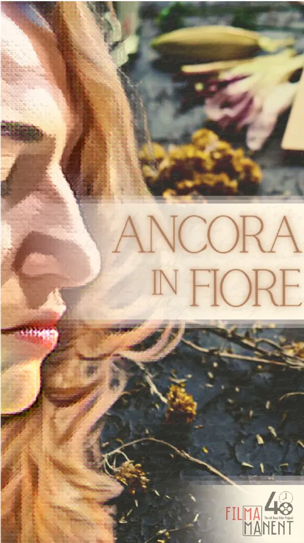
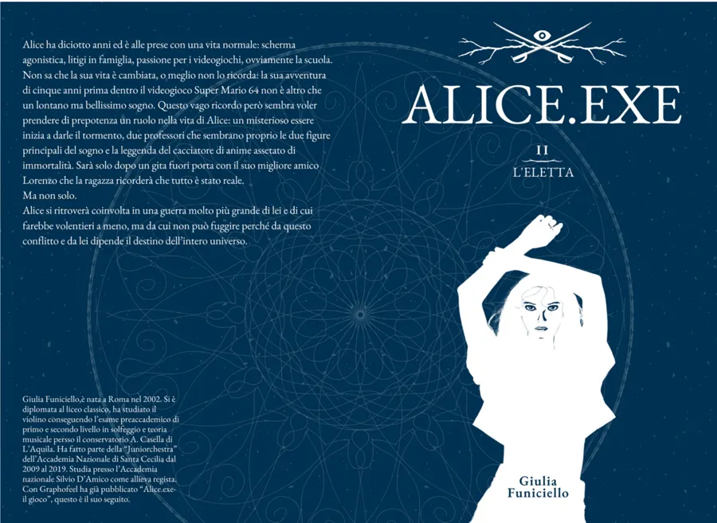
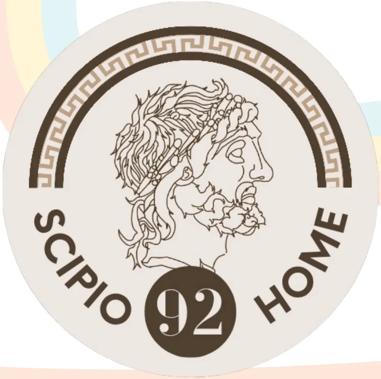

Grafica e comunicazione
Messaggi che arrivano
Disegno identità visive, campagne e contenuti per associazioni, enti e progetti culturali. Per me una grafica funziona quando porta un messaggio a chi ne ha bisogno, non solo quando è bella.
Cosa posso fare per te
Identità visive
Logo, colori, caratteri e regole d’uso, per presentarti sempre nello stesso modo.
Campagne di sensibilizzazione
Dall’idea al manifesto, passando per i contenuti social e i materiali per gli eventi.
Stampati
Manifesti, pieghevoli, locandine, copertine di libri e targhe.
Piani editoriali e testi
Cosa pubblicare, quando e con quali parole, perché la grafica da sola non basta.
Portfolio
Una selezione dei lavori degli ultimi anni.








Come mi sono formato
- Graphic Design Specialization, California Institute of the Arts
- Copywriting e Advanced Copywriting, Learnn
- Gestione dei beni culturali, Divulgazione Dinamica, 200 ore
Hai un messaggio da far arrivare?
Che sia una campagna, un logo o un pieghevole, partiamo da chi deve leggerlo.
Parliamone